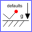
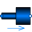

BaseModelNonconstantCrossSectionAreaGeneric pressure drop component with constant turbulent loss factor data and without an icon, for non-constant cross section area |
|
Information
This information is part of the Modelica Standard Library maintained by the Modelica Association.
This model computes the pressure loss of a pipe segment (orifice, bending etc.) with a minimum amount of data provided via parameter data. If available, data should be provided for both flow directions, i.e., flow from port_a to port_b and from port_b to port_a, as well as for the laminar and the turbulent region. It is also an option to provide the loss factor only for the turbulent region for a flow from port_a to port_b.
The following equations are used:
Δp = 0.5*ζ*ρ*v*|v|
= 0.5*ζ/A^2 * (1/ρ) * m_flow*|m_flow|
Re = |v|*D*ρ/μ
| flow type | ζ = | flow region |
| turbulent | zeta1 = const. | Re ≥ Re_turbulent, v ≥ 0 |
| zeta2 = const. | Re ≥ Re_turbulent, v < 0 | |
| laminar | c0/Re | both flow directions, Re small; c0 = const. |
where
- Δp is the pressure drop: Δp = port_a.p - port_b.p
- v is the mean velocity.
- ρ is the density.
- ζ is the loss factor that depends on the geometry of
the pipe. In the turbulent flow regime, it is assumed that
ζ is constant and is given by "zeta1" and
"zeta2" depending on the flow direction.
When the Reynolds number Re is below "Re_turbulent", the flow is laminar for small flow velocities. For higher velocities there is a transition region from laminar to turbulent flow. The loss factor for laminar flow at small velocities is defined by the often occurring approximation c0/Re. If c0 is different for the two flow directions, the mean value has to be used (c0 = (c0_ab + c0_ba)/2). - The equation "Δp = 0.5*ζ*ρ*v*|v|" is either with respect to port_a or to port_b, depending on the definition of the particular loss factor ζ (in some references loss factors are defined with respect to port_a, in other references with respect to port_b).
- Re = |v|*D_Re*ρ/μ = |m_flow|*D_Re/(A_Re*μ) is the Reynolds number at the smallest cross section area. This is often at port_a or at port_b, but can also be between the two ports. In the record, the diameter D_Re of this smallest cross section area has to be provided, as well, as Re_turbulent, the absolute value of the Reynolds number at which the turbulent flow starts. If Re_turbulent is different for the two flow directions, use the smaller value as Re_turbulent.
- D is the diameter of the pipe. If the pipe has not a circular cross section, D = 4*A/P, where A is the cross section area and P is the wetted perimeter.
- A is the cross section area with A = π(D/2)^2.
- μ is the dynamic viscosity.
The laminar and the transition region is usually of not much technical interest because the operating point is mostly in the turbulent regime. For simplification and for numerical reasons, this whole region is described by two polynomials of third order, one polynomial for m_flow ≥ 0 and one for m_flow < 0. The polynomials start at Re = |m_flow|*4/(π*D_Re*μ), where D_Re is the smallest diameter between port_a and port_b. The common derivative of the two polynomials at Re = 0 is computed from the equation "c0/Re". Note, the pressure drop equation above in the laminar region is always defined with respect to the smallest diameter D_Re.
If no data for c0 is available, the derivative at Re = 0 is computed in such a way, that the second derivatives of the two polynomials are identical at Re = 0. The polynomials are constructed, such that they smoothly touch the characteristic curves in the turbulent regions. The whole characteristic is therefore continuous and has a finite, continuous first derivative everywhere. In some cases, the constructed polynomials would "vibrate". This is avoided by reducing the derivative at Re=0 in such a way that the polynomials are guaranteed to be monotonically increasing. The used sufficient criteria for monotonicity follows from:
- Fritsch F.N. and Carlson R.E. (1980):
- Monotone piecewise cubic interpolation. SIAM J. Numerc. Anal., Vol. 17, No. 2, April 1980, pp. 238-246
Parameters (14)
| dp_start |
Value: dp_nominal Type: AbsolutePressure (Pa) Description: Guess value of dp = port_a.p - port_b.p |
|---|---|
| m_flow_small |
Value: if system.use_eps_Re then system.eps_m_flow * m_flow_nominal else system.m_flow_small Type: MassFlowRate (kg/s) Description: Small mass flow rate for regularization of zero flow |
| show_T |
Value: true Type: Boolean Description: = true, if temperatures at port_a and port_b are computed |
| show_V_flow |
Value: true Type: Boolean Description: = true, if volume flow rate at inflowing port is computed |
| allowFlowReversal |
Value: system.allowFlowReversal Type: Boolean Description: = true to allow flow reversal, false restricts to design direction (m_flow >= 0) |
| momentumDynamics |
Value: Types.Dynamics.SteadyState Type: Dynamics Description: Formulation of momentum balance |
| m_flow_start |
Value: system.m_flow_start Type: MassFlowRate (kg/s) Description: Start value of mass flow rates |
| data |
Value: Type: LossFactorData Description: Loss factor data |
| m_flow_nominal |
Value: if system.use_eps_Re then system.m_flow_nominal else 1e2 * system.m_flow_small Type: MassFlowRate (kg/s) Description: Nominal mass flow rate |
| use_Re |
Value: false Type: Boolean Description: = true, if turbulent region is defined by Re, otherwise by m_flow_small |
| from_dp |
Value: false Type: Boolean Description: = true, use m_flow = f(dp) else dp = f(m_flow) |
| show_Re |
Value: false Type: Boolean Description: = true, if Reynolds number is included for plotting |
| show_totalPressures |
Value: false Type: Boolean Description: = true, if total pressures are included for plotting |
| show_portVelocities |
Value: false Type: Boolean Description: = true, if port velocities are included for plotting |
Inputs (1)
| pathLength |
Default Value: 0 Type: Length (m) Description: Length flow path |
|---|
Connectors (2)
| port_a |
Type: FluidPort_a Description: Fluid connector a (positive design flow direction is from port_a to port_b) |
|
|---|---|---|
| port_b |
Type: FluidPort_b Description: Fluid connector b (positive design flow direction is from port_a to port_b) |
Components (7)
| state_a |
Type: ThermodynamicState Description: State for medium inflowing through port_a |
|
|---|---|---|
| state_b |
Type: ThermodynamicState Description: State for medium inflowing through port_b |
|
|  | system |
Type: System Description: System properties |
| data |
Type: LossFactorData Description: Loss factor data |
|
| state_nominal |
Type: ThermodynamicState Description: Medium state to compute nominal pressure drop |
|
| state_b_des |
Type: ThermodynamicState Description: Thermodynamic state at port b for flow a -> b |
|
| state_a_nondes |
Type: ThermodynamicState Description: Thermodynamic state at port a for flow a <- b |
Extended by (1)
|  |
Modelica.Fluid.Fittings Pressure drop in pipe due to suddenly expanding or reducing area (for both flow directions) |